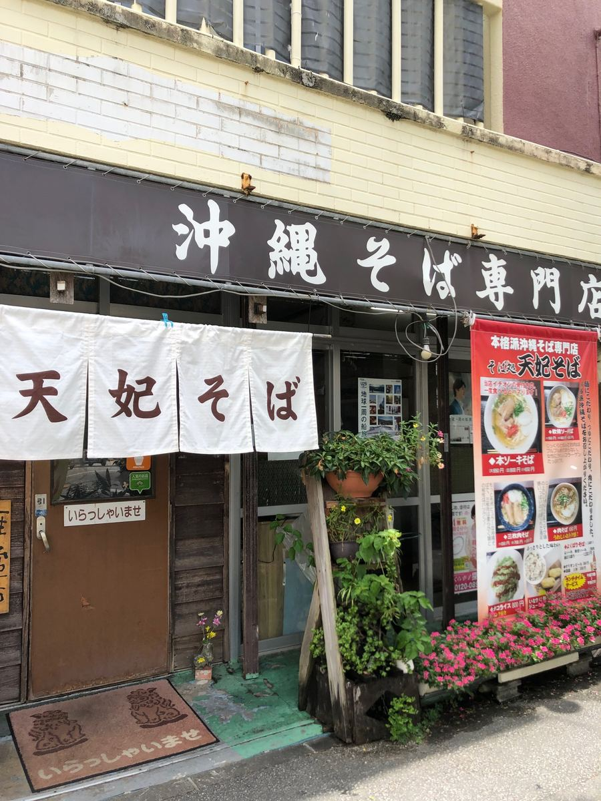
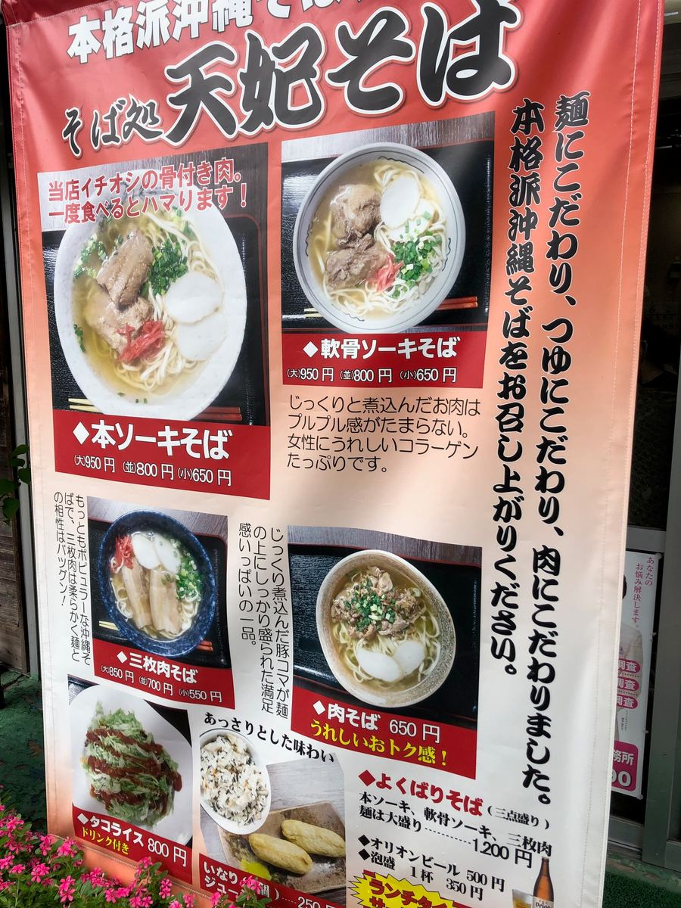
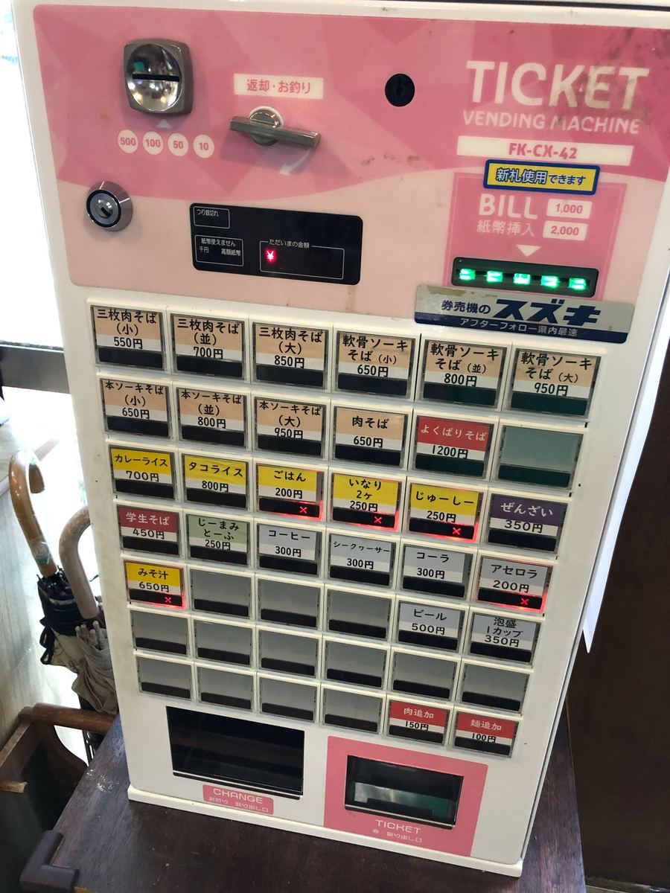
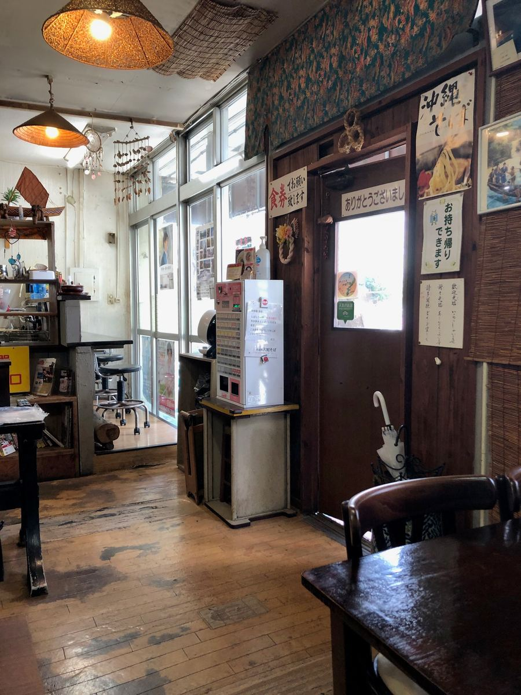
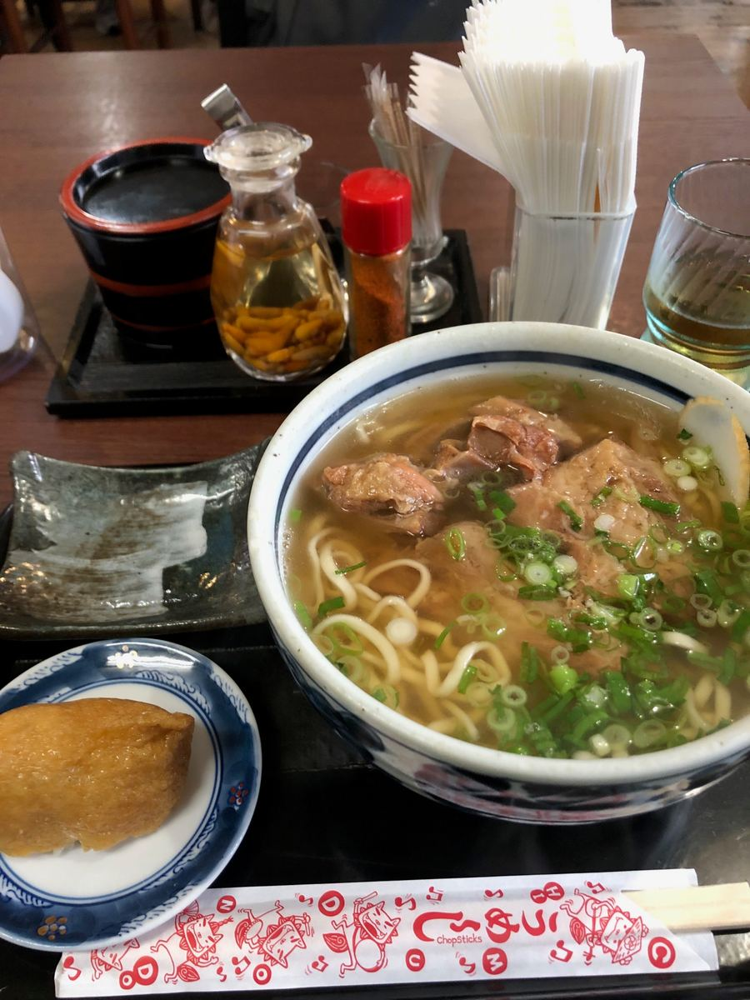
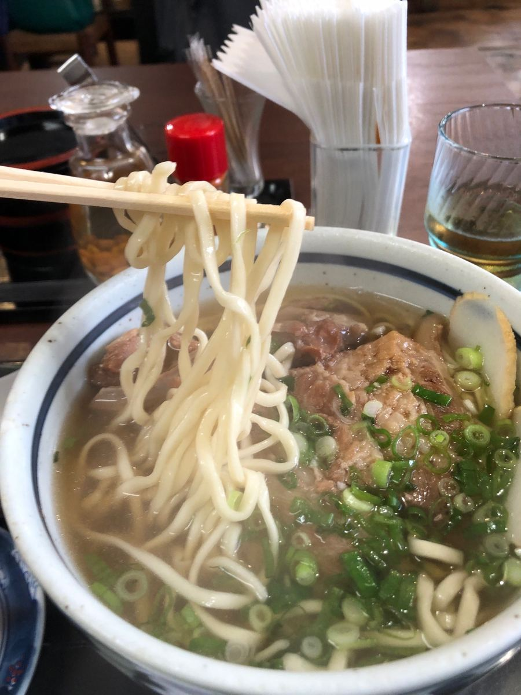

On this Okinawa soba journey, I visited "Tenpi Soba" in Kume, Naha City 🍜 I ate here in June 2025 😄

The shop's landmarks are the big "Okinawa Soba Specialty Shop" sign and a white noren curtain reading "Tenpi Soba." Greenery and flowers decorate the entrance area, giving off a somewhat nostalgic atmosphere 😊

The big sign at the shop front reads "We're committed to the noodles, committed to the broth, and committed to the meat." Among them, the bone-in pork rib soba is described as "our top-pick bone-in meat. Once you try it, you'll be hooked!" so I had to order it 🤤

You order at the ticket machine at the entrance. The bone-in pork rib soba comes in three sizes: small ¥650, regular ¥800, and large ¥950. Besides soft-bone pork rib soba, meat soba, and the greedy soba with lots on top, there's also curry rice, taco rice, and even zenzai.

The interior has wooden floors and hanging lamps for a calm atmosphere. When I visited, in addition to locals, there were many foreign tourists, and it was quite bustling 😄

This is the bone-in pork rib soba that was brought out. The nice thing is that a free jushi or inari comes with it as a service, and this day I chose the inari ✨
First, the soup. Maybe it's a blended broth; rather than either pork bone or bonito asserting itself strongly, the flavor was restrained overall 😋

The noodles are medium-thick, loosely wavy noodles, boiled on the soft side.
The bone-in pork ribs are the type with soy sauce soaked in firmly. Some firm soft bone is mixed in and it's satisfying to eat, but I did feel a fair amount of sinewy texture ^^;
Rating (9/15): A blended broth where neither pork bone nor bonito is too assertive, with soft, medium-thick wavy noodles. The bone-in pork ribs are the type with soy sauce soaked in and some firm soft bone mixed in, with a sinewy texture. The free inari was a nice point, but my impression of the flavor itself is that it's average. Even so, it was a shop bustling with locals and foreign tourists, showing its popularity 😊
Noodles: ★★★☆☆（3）
Soup: ★★★☆☆（3）
Toppings: ★★★☆☆（3）